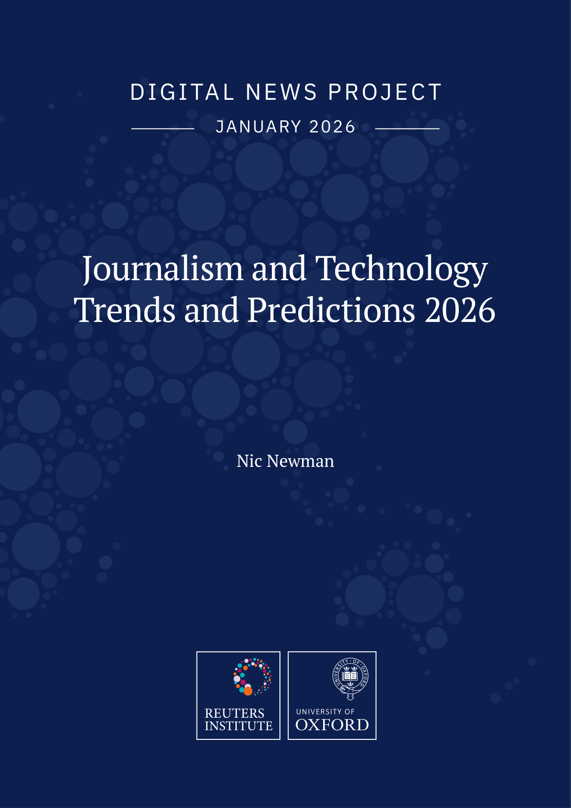

Executive intelligence brief
JANUARY 2026
Chartbeat aggregate data show Google traffic from organic search to more than 2,500 sites fell 33% globally from November 2024 to November 2025.
01. Overview
JANUARY 2026
Executive summary of the source report, shaped for fast review and downstream decision-making.
Executive summary
Chartbeat aggregate data show Google traffic from organic search to more than 2,500 sites fell 33% globally from November 2024 to November 2025. For Q5, the 268 respondents’ average slider score was −43% on a slider ranging from +100% to −100%, indicating an expectation of declining search-engine traffic over the next three years. Among the 264 Q13 respondents, the reported net differences between proportions saying each area was more versus less important for newsroom focus in the era of AI were +91 for original investigations/on-the-ground reporting, +82 for contextual analysis (explanation, framing), and −42 for service journalism. Among Q11 respondents (base 265), 44% chose promising and 42% limited as the adjective closest to describing the impact of newsroom AI initiatives so far. Among publisher respondents (base 272), 69% expect possible licensing deals with AI companies around news-content IP to bring at least some income to their company in about three years: 49% expect a minor source and 20% a significant source.
Google organic-search traffic to more than 2,500 sites fell 33% globally from November 2024 to November 2025.JANUARY 2026, page 12
For Q5, the 268 respondents’ average slider score was −43% on a slider ranging from +100% to −100%, indicating an expectation of declining search-engine traffic over the next three years.JANUARY 2026, page 12
Among the 264 Q13 respondents, the reported net differences between proportions saying each area was more versus less important for newsroom focus in the era of AI were +91 for original investigations/on-the-ground reporting, +82 for contextual analysis (explanation, framing), and −42 for service journalism.JANUARY 2026, page 17
Decision brief
Chartbeat aggregate data show Google traffic from organic search to more than 2,500 sites fell 33% globally from November 2024 to November 2025.
Metric spine
Chartbeat aggregate data sourced for the report show Google traffic from organic search to more than 2,500 sites fell 33% globally between November 2024 and November 2025.
Among publisher respondents (base 272), 69% expect possible AI-company licensing deals around news-content IP to bring at least some company income in about three years.
Among respondents from commercial publishers, excluding publicly funded public broadcasters (base 259), 37% said funding from platforms, including AI platforms, was likely to be important or very important for their company in 2026.
Watchouts
- Among respondents to Q19 (base 263), 70% were somewhat or very concerned about creators taking time and attention away from publisher content, compared with 39% concerned about losing talent.
Claim support
Google organic-search traffic to more than 2,500 sites fell 33% globally from November 2024 to November 2025.
Direct evidence span · Source backed · LowFor Q5, the 268 respondents’ average slider score was −43% on a slider ranging from +100% to −100%, indicating an expectation of declining search-engine traffic over the next three years.
Direct evidence span · Source backed · LowAmong the 264 Q13 respondents, the reported net differences between proportions saying each area was more versus less important for newsroom focus in the era of AI were +91 for original investigations/on-the-ground reporting, +82 for contextual analysis (explanation, framing), and −42 for service journalism.
Direct evidence span · Source backed · LowAmong Q11 respondents (base 265), 44% chose promising and 42% limited as the adjective closest to describing the impact of newsroom AI initiatives so far.
Direct evidence span · Source backed · Low02. Findings
What leaders should take from the report.
The most decision-relevant points are presented as short, source-backed findings so the report can be evaluated quickly.
Chartbeat aggregate data sourced for the report show Google traffic from organic search to more than 2,500 sites fell 33% globally between November 2024 and November 2025. Separately, the average slider score among Q5 respondents (base 268; slider range +100% to −100%) was −43% for expected search-engine traffic change over the next three years, an expectation rather than an observed change.
- So what
- The observed decline and respondent expectation are different signals; use them as separate inputs to traffic scenarios.
- Now what
- MarketLense recommendation: monitor observed referral data separately from respondent expectations when updating acquisition scenarios.
Among the 264 Q13 respondents, the reported net difference between proportions saying areas were more versus less important for newsroom focus in the era of AI was +91 for original investigations/on-the-ground reporting, +82 for contextual analysis (explanation, framing), and −42 for service journalism.
- So what
- The stated priorities provide a directional signal, not evidence that newsroom practice has changed.
- Now what
- MarketLense recommendation: use these responses as an input to content planning, then validate choices against newsroom-specific goals.
Among respondents to Q19 (base 263), 70% were somewhat or very concerned about creators taking time and attention away from publisher content, compared with 39% concerned about losing talent.
- So what
- The greater reported concern is attention diversion, not talent loss; treat them as distinct creator-strategy questions.
- Now what
- MarketLense recommendation: if evaluating creator partnerships, assess audience attention and talent implications separately.
Among respondents answering Q11 (base = 265), 44% chose promising, 42% limited, 13% transformational, and 2% disappointing as the adjective closest to describing the impact of newsroom AI initiatives so far.
- So what
- The reported assessments are mixed, rather than a single uniform account of initiative impact.
- Now what
- MarketLense recommendation: assess initiative outcomes against newsroom-specific objectives before framing them as transformative.
Among publisher respondents (base 272), 69% expect possible licensing deals with AI companies around news-content IP to bring at least some money to their company in about three years: 49% expect a minor source and 20% a significant source. Separately, 20% expect no income, 11% don't know, and 0% expect a main source of income.
- So what
- The responses frame licensing as an uncertain contribution rather than a main income source.
- Now what
- MarketLense recommendation: scenario-test licensing income without treating respondent expectations as booked revenue.
Among respondents from commercial publishers, excluding publicly funded public broadcasters (base 259), 37% said funding from platforms, including AI platforms, was likely to be important or very important for their company in 2026. The chart also marks this as up +17 percentage points in the last two years, driven by new AI revenues.
- So what
- This records respondents’ assessment of likely importance, not realized platform revenue.
- Now what
- MarketLense recommendation: treat the 2026 importance rating as a planning assumption separate from recognized revenue.
03. Signals
Signals to watch after reading this report.
Use these themes as a concise market read from this source: where attention is shifting, what may matter next, and which assumptions deserve follow-up.
No report signals were extracted.
04. Evidence
Source language behind the read.
Selected verbatim excerpts preserve the report's own wording so readers can check tone, emphasis and evidence quality.
Key quotes omitted because evidence support was too weak (quotes_missing).
05. Expert view
MarketBearing expert view.
Our team's perspective translates the report into practical implications for business, brand and digital leaders.
LinkedIn-ready post
06. Taxonomy
Where this report fits in the knowledge base.
Categories, tags and chapters make the report easier to compare, retrieve and connect with adjacent market intelligence.
Tags
- Internet and Media
- Generative AI
- Technology
- Business Performance
- Trust
Ordered chapters
1. Acknowledgements
2. Executive Summary
3. 1. Pressures on Journalism Mount
4. 2. Answer Engines and the Implications for Access
5. 3. Content Strategies Shift towards Distinctiveness
6. 4. Social Media’s Mid-Life Crisis and the Video-fication of Everything
7. 5. Responding to the Creator Wave
8. 6. AI Slop, Deep-Fakes, and Misinformation
9. 7. Latest Tales of AI in the Newsroom
10. 8. Changing Business Models and Barriers to Innovation
11. 9. What’s Next in Technology?
12. 10. Conclusions
13. Survey Methodology
07. Source
Read the source and check provenance.
Use this area to open the original material and understand how MarketBearing turned the report into a structured briefing.

Full report
Open the source material used for this MarketBearing analysis.
Publication: Reuters Institute
Findings. For Q5, the 268 respondents’ average slider score was −43%, indicating an expectation that traffic from search engines would decline over the next three years; this is an expectation, not an observed traffic change. Aggregate data sourced from Chartbeat for the report show that Google traffic from organic search to more than 2,500 sites fell by 33% globally between November 2024 and November 2025.
Rendering. Generated from report artifacts, normalized metadata, persisted figures and source scoring where available.